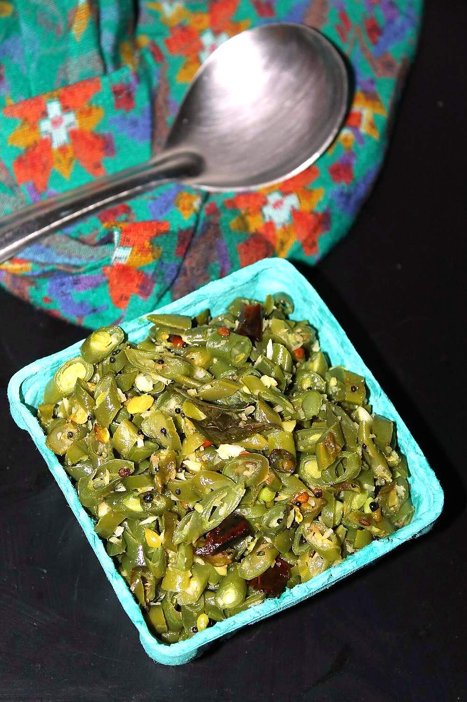

Contains: mustard
Checked against the ingredient list for milk, egg, fish, crustaceans, tree nuts, peanuts, sesame, mustard, soy and gluten. Nothing else is checked, and brands vary, so read the label on anything you have not bought before.
Ingredients
Quantities for 4.
- 300g, chopped as fine as you can French Beansthe finer the chop, the better the poriyal
- 4 tbsp fresh, grated Coconut
- 2 tbsp, soaked 20 minutes Moong Daladds bite; leave it out for a plainer versionoptional
- 1 tsp Mustard Seeds
- 1 tsp Urad Dal
- 1 tsp Chana Dal
- 2, slit Green Chilli
- 1, broken Dried Red Chilli
- 1 sprig Curry Leaves
- 1/4 tsp Asafoetidause compounded-free hing to keep this gluten-free; it also stands in for the onion
- 1/4 tsp Turmeric
- 2 tbsp Coconut Oil
- 4 tbsp Water
- to taste Salt
Cookware
stovetop, kadhai
Before you start
- Soak the moong dal 20 minutes and drain it well.
- Top, tail and chop the beans to 3mm before you light the stove. This is most of the work.
- Grate the coconut fresh and keep it aside; it goes in off the heat.
Method
- Heat the coconut oil and pop the mustard seeds.
- Add the urad dal and chana dal and fry to a light gold, about 1 minute.
- Add the red chilli, green chilli, curry leaves and hing and fry 15 seconds.
- Tip in the chopped beans and drained moong dal with the turmeric and salt and toss to coat.
- Add 4 tbsp water, cover, and cook on low heat for 8 minutes.Four tablespoons is the whole quota. Poriyal steams in its own moisture, it does not boil.
- Uncover and check: the beans should be bright green and just tender, with no water left in the pan.
- If any liquid remains, raise the heat and toss for a minute until the pan is dry.A wet poriyal tastes flat and the coconut clumps.
- Turn off the heat, fold in the grated coconut, and serve with rice and rasam.Coconut added on the heat turns dry and loses its sweetness.
Storage
Keeps 2 days refrigerated. Reheat in a dry pan for 3 minutes; the fresh coconut means it does not freeze well.
Nutrition Good estimate
| Per serving110 g | Per 100 g | |
|---|---|---|
| Calories | 173+ kcal | 158+ kcal |
| Protein | 4.2+ g | 4+ g |
| Carbohydrate | 13.8+ g | 13+ g |
| of which sugars | 4.1+ g | 4+ g |
| Fibre | 5.0+ g | 4+ g |
| Fat | 12.3+ g | 11+ g |
| of which saturated | 10.2+ g | 9+ g |
| of which unsaturated | 1.2+ g | 1+ g |
The + means ingredients given to taste rather than by weight are counted as zero, so the true figure is a little higher than shown. Worked out from the listed quantities; most of the ingredient list could be weighed. Ingredients given to taste rather than by weight are counted as zero, so the real figure is a little higher than this. The + says so. Some ingredients have no exact match in the nutrient database and use the nearest equivalent: asafoetida, curry leaves, urad dal. Estimated from raw ingredients using USDA FoodData Central. Cooking changes are not modelled, and added salt is excluded, so sodium is not given.
Written and checked against sources, not cooked in a test kitchen. Times, yields and keeping times are guides, and the allergen and nutrition figures are worked out from the ingredient list rather than measured. Use your own judgement, particularly on doneness and on anything you are storing or reheating. More in About.